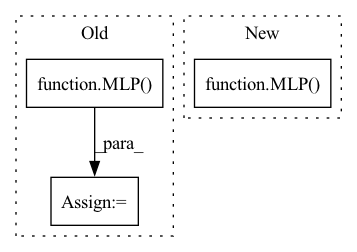

Pattern ID :28822
Before Change
input_shape, rng, learning_rate):
Creates initial `TrainState`.
del hidden_sizes, output_size
mlp = MLP()
params = mlp.init(rng, jnp.ones([1] + list(input_shape)))["params"]
tx = optax.adam(learning_rate)
return train_state.TrainState.create(
apply_fn=mlp.apply, params=params, tx=tx)After Change
def create_train_state(hidden_sizes, output_size, input_shape, rng,
learning_rate):
Creates initial `TrainState`.
mlp = MLP( hidden_sizes, output_size)
params = mlp.init(rng, jnp.ones([1] + list(input_shape)))["params"]
tx = optax.adam(learning_rate)
return train_state.TrainState.create(apply_fn=mlp.apply, params=params, tx=tx)
In pattern: SUPERPATTERN
Frequency: 4
Non-data size: 3
Instances Fragment ID: 84743261
Project Name: google/uncertainty-baselines
Commit Name: cb581a303749fa4e7f1a19422109627b3a6d61ea
Time: 2022-08-13
Author: no-reply@google.com
File Name: experimental/shoshin/training.py
M Class Name: AnonimousClass
N Class Name: AnonimousClass
M Method Name: create_train_state(5)
N Method Name: create_train_state(5)
M Parent Class:
N Parent Class:
M File Name: experimental/shoshin/training.py
N File Name: experimental/shoshin/training.py
M Start Line: 61
M End Line: 62
N Start Line: 57
N End Line: 57
Before Change
input_dimension = agents*frame_history*45*45*45
output_dimension = agents*number_actions
self.q_network = MLP(input_dimension, output_dimension, agents)
self.target_network = MLP( input_dimension, output_dimension, agents)
self.q_network.cuda()
self.target_network.cuda()
self.copy_to_target_network()
// Define the optimiser which is used when updating the Q-network. The learning rate determines how big each gradient step is during backpropagation.After Change
elif type == "MLP":
input_dimension = agents*frame_history*45*45*45
output_dimension = agents*number_actions
self.q_network = MLP( input_dimension, output_dimension, agents) .to(self.device)
self.target_network = MLP(input_dimension, output_dimension, agents).to(self.device)
self.copy_to_target_network() Fragment ID: 84743260
Project Name: gml16/rl-medical
Commit Name: 219d3e97e2168e365496edff8d4d0a197ef49823
Time: 2020-03-05
Author: g.m.leroy@outlook.com
File Name: examples/LandmarkDetection/DQN/DQNModelTorch.py
M Class Name: DQN
N Class Name: DQN
M Method Name: __init__(6)
N Method Name: __init__(6)
M Parent Class:
N Parent Class:
M File Name: examples/LandmarkDetection/DQN/DQNModelTorch.py
N File Name: examples/LandmarkDetection/DQN/DQNModelTorch.py
M Start Line: 103
M End Line: 112
N Start Line: 165
N End Line: 179
Before Change
// self.sa3_module = _SetAbstractionModule(0.25, self.config["r3"], _MLP([128 + 3, 128, 128, 128]))
// self.sa4_module = _SetAbstractionModule(0.25, self.config["r4"], _MLP([128 + 3, 128, 128, 256]))
// self.sa_last_module = _GlobalSetAbstractionModule(_MLP([256 + 3, 256, 512, 1024]))
self.sa_last_module = _GlobalSetAbstractionModule(MLP( [3, 256, 512, 1024]) )
self.lin = nn.Linear(1024, out_size)
After Change
self.config = {"r1": 0.3, "r2": 0.4, "r3": 5, "r4": 7} // defaults for this net
self.config.update(config) // from input
self.sa1_module = _SetAbstractionModule(0.2, self.config["r1"], MLP( [3, self.config["EConv_hidden"], self.config["EConv_hidden"], self.config["EConv_feature"]]) )
// self.sa2_module = _SetAbstractionModule(0.25, self.config["r2"], MLP([112 + 3, 200, 200, 112]))
// self.sa3_module = _SetAbstractionModule(0.25, self.config["r3"], MLP([128 + 3, 128, 128, 128]))
// self.sa4_module = _SetAbstractionModule(0.25, self.config["r4"], MLP([128 + 3, 128, 128, 256])) Fragment ID: 84743256
Project Name: maria-korosteleva/garment-pattern-estimation
Commit Name: f968893c30485d64366c85055b379f24bacd8618
Time: 2021-01-20
Author: mariako@kaist.ac.kr
File Name: nn/net_blocks.py
M Class Name: PointNetPlusPlus
N Class Name: PointNetPlusPlus
M Method Name: __init__(3)
N Method Name: __init__(3)
M Parent Class: nn.Module
N Parent Class: nn.Module
M File Name: nn/net_blocks.py
N File Name: nn/net_blocks.py
M Start Line: 68
M End Line: 70
N Start Line: 60
N End Line: 70
Before Change
critic_dim=1
):
super().__init__()
self.critic = MLP( observation_size, hidden_size, critic_dim)
if distribution in ["Beta", "TanhNormal", "Normal"]:
action_size *= 2
self.actor = MLP(observation_size, hidden_size, action_size, output_gain=0.01)After Change
input_size, hidden_size, action_size,
n_layers, activation_str, 0.01
)
self.critic = MLP(
input_size, hidden_size, critic_size,
n_layers, activation_str, 1.0
)
self.detach_actor = detach_actor
self.detach_critic = detach_critic
Fragment ID: 84743255
Project Name: cherrypiesexy/imitation_learning
Commit Name: d3dbcfd6f84f83aa4be338202b6b4c22d8cdd13a
Time: 2021-01-29
Author: interga@post-hardcore.ru
File Name: algorithms/nn/actor_critic.py
M Class Name: ActorCriticTwoMLP
N Class Name: ActorCriticTwoMLP
M Method Name: __init__(9)
N Method Name: __init__(6)
M Parent Class: nn.Module
N Parent Class: nn.Module
M File Name: algorithms/nn/actor_critic.py
N File Name: algorithms/nn/actor_critic.py
M Start Line: 77
M End Line: 81
N Start Line: 106
N End Line: 120